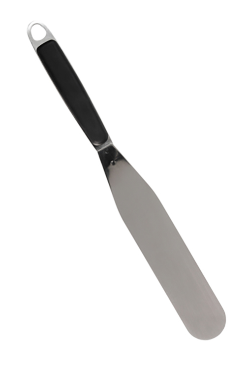
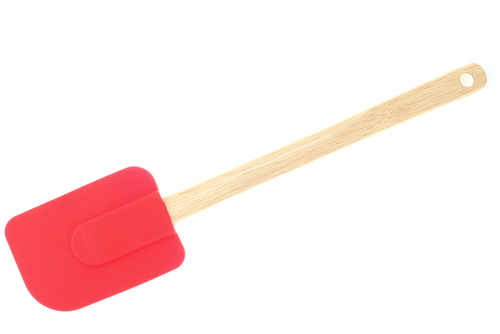
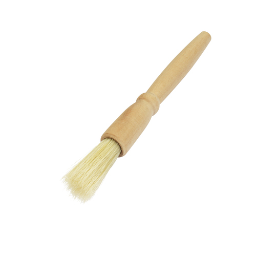
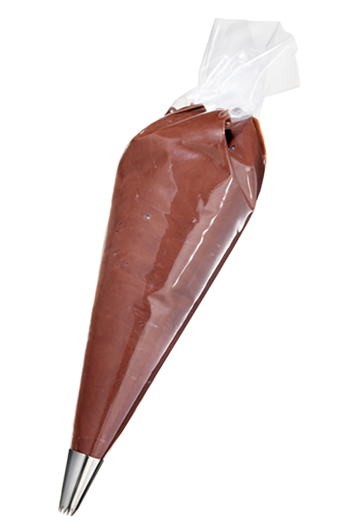

Task 2: Producing Dough Products
Further instructions here to be confirmed.
Further instructions here to be confirmed.
When making fermented dough products, specialist equipment is available to make the process more effective and efficient. This includes the following:
This is an essential piece of equipment to ensure the correct weighing of commodities to meet the product requirements and ensure consistency each time the product is made.
Most mixers these days, come with a dough hook.
This specialist equipment kneads the dough efficiently and rapidly develops the protein, gluten. This is the protein that provides an elasticity that traps the air bubbles in the mix.
Proving cabinets provide the chef with the ability to control the warmth and humidity.
This control ensures the perfect atmosphere can be obtained for the even expansion of the fermented dough products.
Baking tins come in many shapes and sizes. These also include baking sheets. They allow the chef to:
Bakers use several types of oven to bake the dough products in such as the following:
There is many other specialist equipment available to the baker including the following:
|  |  |  |  |
The preparation and production of fermented dough products are basic skills required by all bakers, pastry chefs and chefs.
Understanding the principles of production and key steps in the preparation will ensure that you can produce quality products and avoid costly mistakes.
The making of quality fermented dough products is an art in its own right and bakers need to be real specialists. Whilst chefs may produce quality goods, without having the specialist baking knowledge and experience, there is more chance of faults occurring.
Whilst some faults are easy to explain others are not. Below are some of the common faults found when making fermented products and their causes.
Lack of rise in the dough
Too much rise
Hollow bottom breads
Thickened crusts in bread
Other faults
All the above faults are common when preparing and cooking fermented dough products. The likelihood of these faults occurring is considerably reduced if the following tips are followed:
As we can see above there are many faults that can occur when making any fermented dough products. However, if we follow the simple tips above, most of the faults can easily never occur.
Knowledge and experience will help develop individual skills and support the delivery of quality fermented products for your customers.
Handout 3: Enriched dough – brioche
Brioche is an enriched dough bread from France, with a high egg and butter content. It has a long resting period of approximately six hours to allow the butter to harden to shape the dough before baking.
Ingredients
Method
There are various alternative takes on the basic brioche.
Brioche à tête
Brioche Nanterre
This is a perfect sharing loaf.
Brioche can also be shaped as a plait or as a simple bun.
Major food chains are now using brioche as a matter of course instead of hamburger rolls.
You have now reached the end of this unit and are ready to progress to the quiz. You can do this by clicking on the tabs below. Remember that you can revisit this unit to revise at any time.